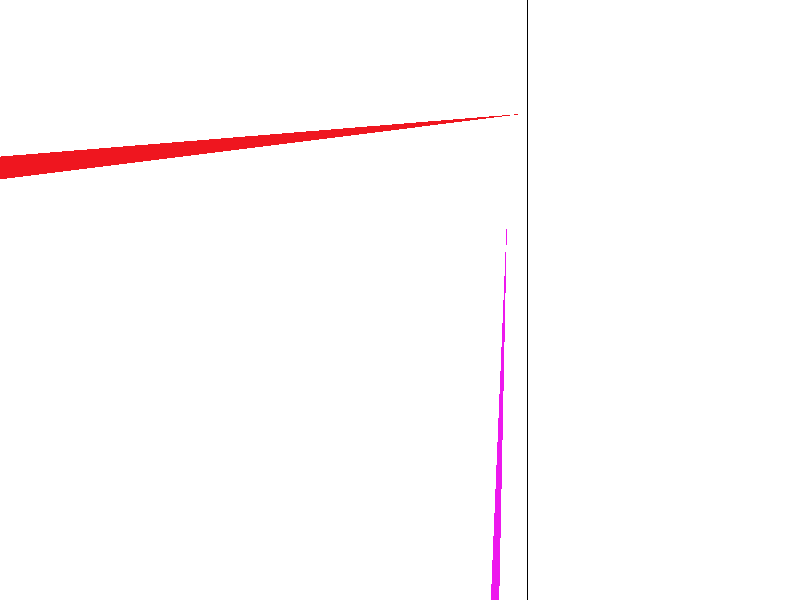
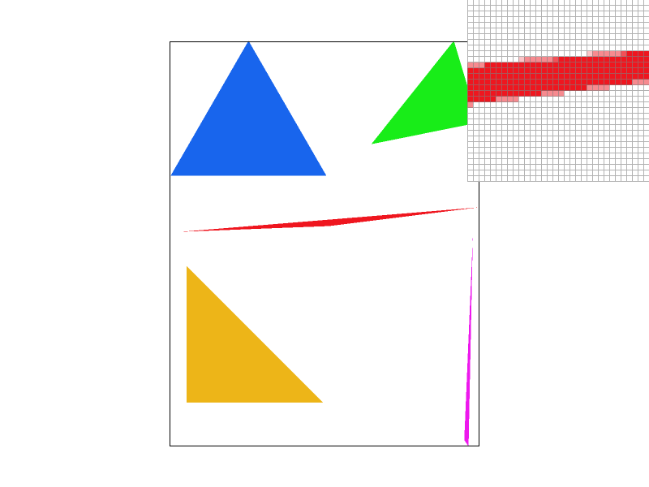
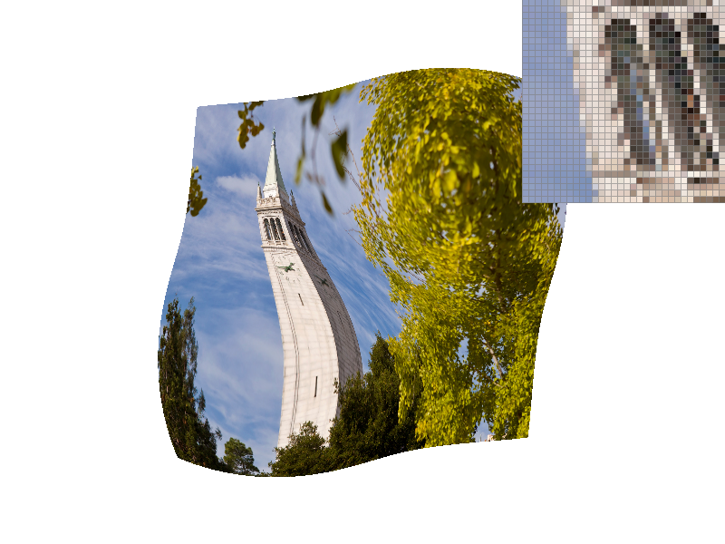
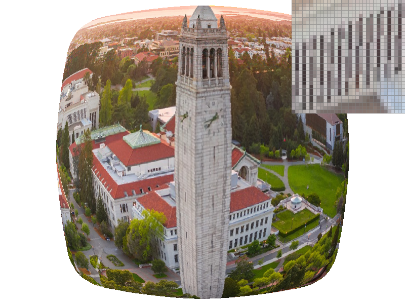

Overview
We implemented a rasterizer capable of rasterizing points, lines, and triangles with colors or textures. The rasterizer offers supersampling, bilinear pixel sampling, and mipmaps / level sampling all to help alleviate anti-aliasing. This homework provided an interesting and intuitive way to examine how screens and images are actually rendered, how common aliasing is, and methods for anti-aliasing.
Section I: Rasterization
Part 1: Rasterizing single-color triangles
We rasterize triangles by checking pixels to see if they located above or on all three edges of the triangle (which means that it is located inside of the triangle). Pixels that are not on/above all three edges are not rendered.
We can check the winding order of the vertices by checking if the third point is above or below the line formed by the first two, and swapping the points to ensure consistency.
Our algorithm checks every pixel sample within the bounding box of the triangle and is no worse. This is accomplished by taking the minimum and maximum X and Y values of the three vertices and looping through the bounding box created.

|

|
Part 2: Antialiasing triangles
Our supersampling algorithm takes sample_rate samples per pixel (spaced in a grid pattern) and stores the correct color of the sample in the sample_buffer, which has been expanded to store width * height * sample_rate elements. We then average the samples for each pixel to obtain the final color of the pixel.
Supersampling is useful, as it allows pixels to take on intermediary colors, easing the transition between color changes. It is a form of anti-aliasing and reduces the jaggies as seen above.
The function to render points and lines had to be modified to fill all sample points for a pixel with the desired color. Otherwise, the color would have been "diluted" when averaging the sample points later.
Supersampling works as antialiasing, as it approximates a one-pixel box filter, which attenuates frequencies with a period less than 1 pixel-width.

|
|
|

|
|
Part 3: Transforms
Section II: Sampling
Part 4: Barycentric coordinates
Barycentric coordinates is a coordinate system that allows for smooth interpolation between the three vertices of a triangle. This can be useful for colors, textures, normal vectors, etc.
The only colors defined in the triangle above are on the three vertices, but barycentric coordinates allows us to interpolate between the colors and generate a color for every point inside the triangle, forming a smooth gradient.
Part 5: "Pixel sampling" for texture mapping
When taking samples for a pixel, if we decide to assign the color based on a texture map (as opposed to barycentric interpolation or strict assignment), we need to sample the texture, as the pixel sample will not always line up with a texture pixel. We do this by calculating the relative/barycentric coordinates of our pixel sample point within the triangle and applying it to the same relative location of the texture triangle. From there, we can either choose the nearest texture pixel or calculate a lerp of the 4 nearest texels (bilinear).
|
|

|
|
|
|
The difference between nearest and bilinear sampling is most evident with a sample rate of 1. We are not supersampling, so pixels in high-frequency regions are aliasing. Bilinear sampling helps to alleviate this. The difference is not as noticable when the sample rate is 16, as the supersampling works as anti-aliasing for both.
Part 6: "Level sampling" with mipmaps for texture mapping
It is difficult low-pass textures at the correct frequency, as one pixel can correspond to many texels and the shape can vary widely. Instead, we low-pass the texture to varying frequencies (levels) and choose the best level when rasterizing. We choose the best level by first calculating du/dx, dv/dx, du/dy, and dv/dy, which is the distance moved on the texture map after moving one pixel on the screen. We then take the log2 of the largest distance moved (either dx or dy) and restrict it to between the lowest and highest levels. We can then round to the nearest level or interpolate between the two levels it lies between.
Bilinear pixel sampling (as opposed to nearest) is slower, as it requires 3 more texel reads, as well as lerping. Visually, it offers the least anti-aliasing between the 3 methods, but still noticable.
Level sampling increases memory usage, as we need to store multiple levels of the texture map. Using level zero and nearest level decreases the speed minimally, as we are only reading from one level, whereas bilinear level interpolation is slower and requires two level accesses, as well as an interpolation. Visually, the anti-aliasing looks better, as we are actually filtering out the high frequencies that cause the aliasing.
Supersampling reduces the speed drastically, as we are now sampling multiple times for every single pixel. Visually, it reduces anti-aliasing significantly.
|

|
|
|
|
|